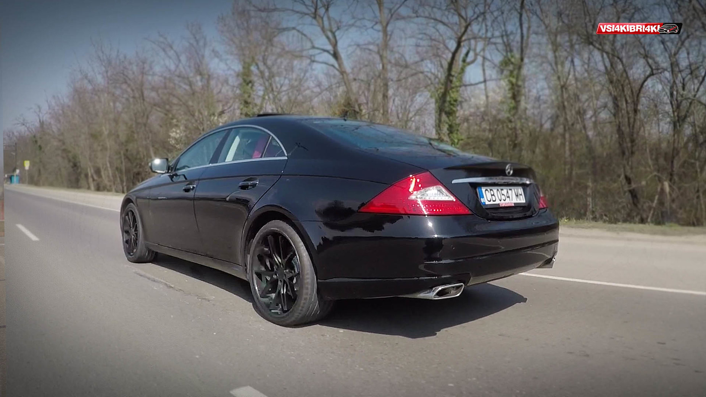
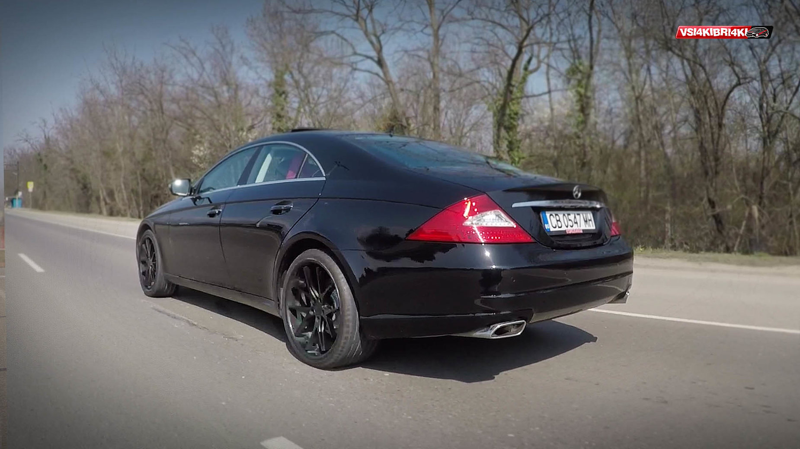

Mercedes CLS W219
 

Нишов автомобил, отворил една нова страница в автомобилната индустрия – 4-врати купета. Макар да не е първият представител на този клас, CLS се счита за пионера, който всички след това копираха – като Audi A7 и VW Passat CC. Автомобилът използва платформата на Е клас, има по-малко пространство в областта на задните седалки и ограничена практичност, но много повече стил. Както показа пазара има търсене за подобен тип коли.
Първото поколение е в производство от 2004 до 2010 г. в Германия. Страничните стъкла са без рамки, колата е с би-ксенонови фарове и завиващи за мъгла. През 2008 г. е представен фейслифта, който е с леки промени отвън и отвътре.
Задвижването е само задно и няма 4х4. Окачването е обикновено на пружини или въздушно - AirMATIC. Пружините на задния мост понякога се чупят заради износване на материала, а подмяната не е скъпа. При покупка на модел с въздушно окачване проверете работата на системата и повдигането и сваляне. Ако компресорът работи прекалено много, това е индикация за изпускане на въздух. Ремонтните комплекти обаче не са скъпи.
До средата на 2006 г. колите със спирачна система Sensotronic Brake Control имат проблеми с дефекти поради бързо износване, но вече ремонтните комплекти не са скъпи.
Арматурното табло в CLS е много по-елегантно, има дървени апликации и хоризонтална форма, която го отличава от Е-клас. Седалките са анатомични, има обдухване и отопление. Местата са четири и обикновено всички коли са много добре екипирани с екстри.
Двигатели
Бензинови 3,0 V6 с 231 к.с., 3,5 V6 с 272 и 292 к.с.,, 5,0 V8 с 306 к.с., 5,5 V8 с 388 к.с., 5,4 V8 в CLS55 AMG с 476 к.с. и 6,2 V8 в CLS63 AMG с 514 к.с. Бензиновите мотори до октомври 2006 г. имат проблем със зъбните колела, но повечето са вече със заменени. Също така пластмасовите тапи до мотора имат теч до 2008 г. V8 с 306 к.с. е един от най-здравите в гамата. При 5,5 V8 проверете вихровите клапи, които затачват. Понякога индикацията за проверка на двигател се активира и при проблем в датчика за външна температура.
Дизелов 3,0 V6 с 224 и 276 к.с. Икономични са, мощни, но търсете кола на по-малко пробег и след фейслифта. Проверете дюзите, филтъра за твърди частици и ЕГР. Използвайте добавки. Предавателната кутия е 7-степенна автоматична, понякога има проблеми със сензора за скорост.
Сменяйте редовно маслото.